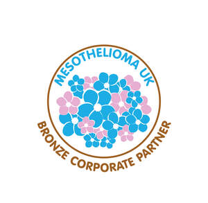

Trade Mark Journal No.2025/027 4 July 2025
UK00004218278 12 June 2025 (9,16,18,25,35,36,41,42,44)

- Class 9
- Downloadable electronic publications; downloadable digital badges, certificates, logos and promotional materials for use by corporate supporters; downloadable graphics for use in advertising and sponsorship; digital media featuring information about charitable partnerships; downloadable newsletters and bulletins; electronic downloadable files used for awareness and educational purposes relating to mesothelioma.
- Class 16
- Paper and cardboard; printed matter; printed publications including periodicals, brochures, journals, articles, charts, newspapers, newsletters, pamphlets, notebooks, prospectuses, books, forms, maps, magazines, manuals, pictures, photographs, calendars, catalogues, leaflets, postcards, writing pads, brochures, reports, diaries, directories, booklets, tickets, posters and prints; advertising and promotional material; research guides; manuals; instructional and teaching material (except apparatus) and manuals; printed teaching materials; periodical publications; training materials; printed matter for educational purposes; printed software relating to education; bookbinding material; educational material in printed form; photographs; stationery and office requisites, except furniture; training manuals; educational and teaching publications; educational books; printed educational and teaching materials; educational and instructional material.
- Class 18
- Leather and imitations of leather; animal skins and hides; luggage and carrying bags; umbrellas and parasols; walking sticks; whips, harness and saddlery; collars, leashes and clothing for animals; bags; book bags; cosmetic bags; make up bags; work bags; canvas shopping bags; souvenir bags; shopping bags; school book bags; reusable shopping bags; duffel bags; sports bags; overnight bags; toiletry bags; travel bags; travelling bags; camping bags; carrying bags; hiking bags; tote bags; leather bags; bags for umbrellas; shoulder bags; flight bags; bags for clothes; handbags; ladies handbags; gents handbags; suitcases; suitcases with wheels; leather suitcases; purses; card wallets; carrying cases; grocery tote bags; key cases; rucksacks; weekend bags; parts and fittings for all the aforesaid goods.
- Class 25
- Clothing, footwear, headgear; casual wear; shoes for casual wear; sports shoes; trainers [footwear]; dresses; leisure wear; sportswear; nightwear; gym wear; shirts; causal shirts; sports shirts; children's shirts; football shirts; hooded sweat shirts; printed tee-shirts; hats; beanie hats; sun hats; caps; scarfs; socks; slippers; vests; jumpers; blouses; cardigans; waistcoats [vests]; shorts; wrist bands; headbands; underwear; leggings; swimwear; swim caps; jackets; casual jackets; coats; belts for clothing; parts and fittings relating to the aforesaid.
- Class 35
- Advertising, marketing and promotional services relating to charitable activities and corporate partnerships; promotional recognition of corporate partnerships and supporters; publication of promotional content highlighting partner organisations; public relations services relating to charity partners; organisation and promotion of fundraising campaigns; business development services for corporate social responsibility programmes.
- Class 36
- Financing and funding services; fund raising services; fund raising for charitable purposes; investment of funds for charitable purposes; charitable collections; organising of charitable collections; providing information relating to charitable fundraising; financial grant services; funding scientific and medical research; accepting and administering monetary charitable contributions; provision of funding and/or financial assistance for charities and charitable causes; provision of financial information; information, advisory and consultancy services relating to all these services.
- Class 41
- Educational services; vocational education services; provision of education, instructional and teaching services; online education services; provision of online training and online training services; conducting training courses relating to cancer online; provision of courses of instruction, lectures and seminars; arranging and conducting educational seminars, courses, conferences, lectures, workshops, exhibitions and symposiums, training courses, teaching and training and camps; educational consultation services; provision of educational instruction and training; training services; providing training; training courses; educational consultation services; teaching services; vocational education; providing of training, entertainment, sporting and cultural activities; provision of training courses; library services; publishing services; provision of non-downloadable and publication of books, articles, leaflets, texts, instructional texts, journals, magazines, periodicals, newsletters, directories, manuals, instructional and teaching material; provision of training facilities; electronic publications (not downloadable); providing online electronic publications (not downloadable); publication of electronic books and journals online; publication of electronic news and bulletins online; providing publications on the Internet or a global computer network; publication of training manuals; publication of books and of texts, other than publicity texts; provision of educational information; provision of information relating to training; information relating to education services; professional consultancy services relating to education; preparation of teaching reports; educational research; development of educational materials; computer based educational services; non-downloadable electronic publications; educational advisory, consultancy and information services; personal and professional development training; career training; courses (Training -) relating to cancer; conducting of educational courses on cancer; education and training in the field of cancer; on-line publication of electronic books and journals; arranging and conducting of conferences and seminars; education services in relation to alleviation, diagnosis, prevention and treatment of cancer; developing and conducting educational programs in the field of cancer and cancer prevention; publication of books, text and magazines; publication of printed matter relating to charity events and fundraising events; arranging and conducting of entertainment events for charitable fundraising purposes; educational services to raise awareness and activities in the field of charitable work, fundraising, health, cancer and cancer prevention; information, advisory and consultancy services relating to all these services.
- Class 42
- Scientific, medical and clinical research; scientific, medical and clinical research in relation to the causes, symptoms, diagnosis, treatment, prevention and controlling of cancer; medical research services; medical research laboratory services; scientific research; research services; medical and pharmacological research services; scientific research for medical purposes; scientific investigations for medical purposes; scientific research for medical purposes in the area of cancerous diseases; provision of information and data relating to medical research and development; providing medical and scientific research information in the field of cancer; design and development of computer hardware and software; laboratory analysis; laboratory research; laboratory services; laboratory testing services; medical laboratory services; research services in relation to the causes, symptoms, diagnosis, treatment, prevention and controlling of cancer; genetic research; provision of research facilities; research laboratories; research in relation to medicines and pharmaceuticals; information, advisory and consultancy services relating to all these services.
- Class 44
- Medical advisory services; medical clinics; medical nursing; medical services; medical care and assistance; medical screening; medical testing; medical examinations; medical information and consultation; medical counselling services; medical counselling; medical nursing services; medical clinic services; providing information in relation to the causes, symptoms, diagnosis, treatment, prevention and controlling of cancer; advisory, consultancy and information services in relation to the causes, symptoms, diagnosis, treatment, prevention and controlling of cancer; medical analysis services for the diagnosis and prognosis of cancer; medical services for the treatment of cancer; medical advice in the field of cancer; providing medical advice in the field of cancer; advice on medical information relating to the causes, symptoms, diagnosis, treatment, prevention and controlling of cancer; information, advisory and consultancy services relating to all these services.
Mesothelioma UK CIO